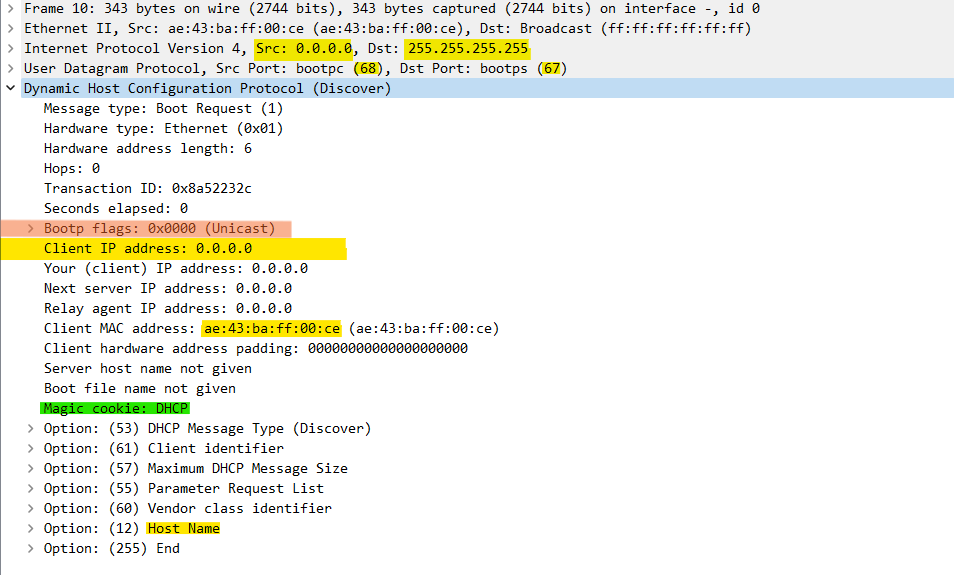
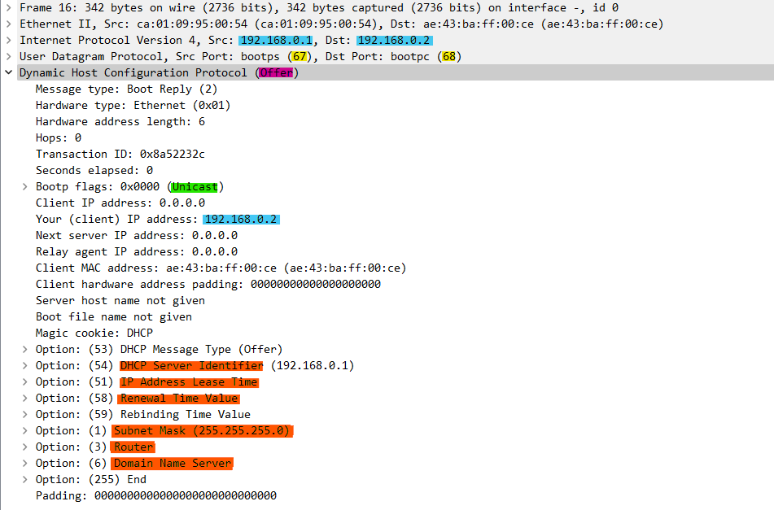
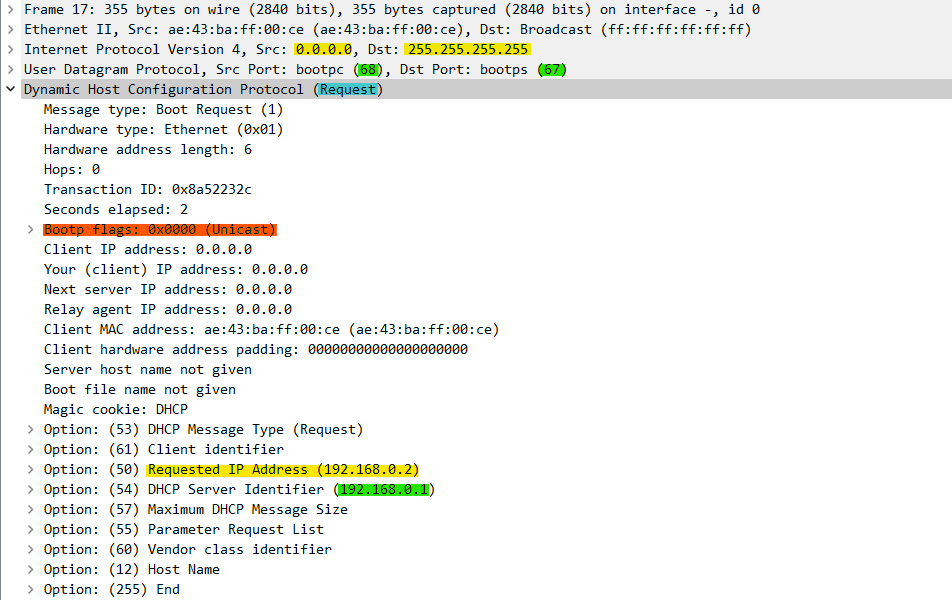
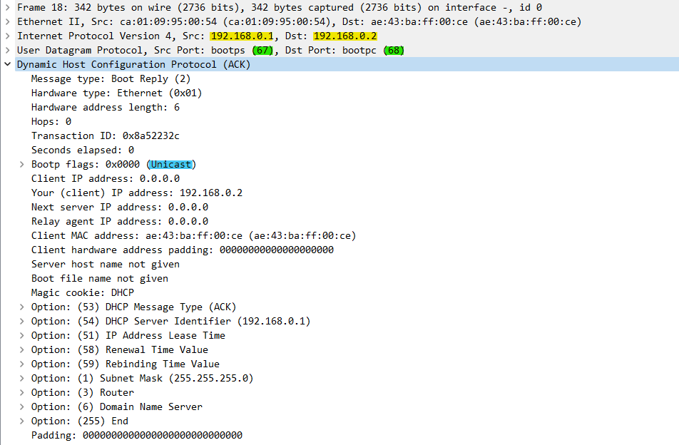
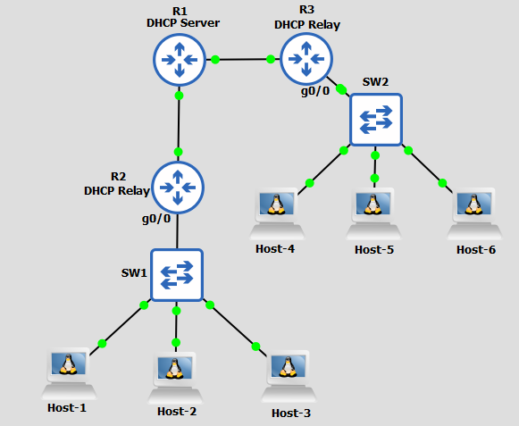
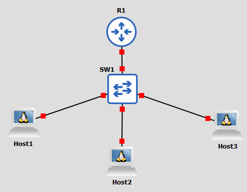
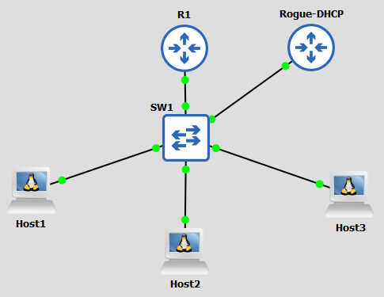
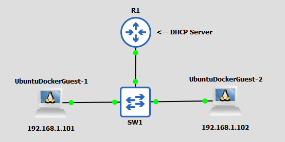
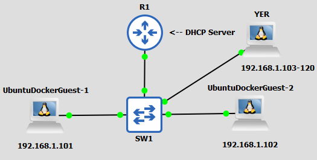
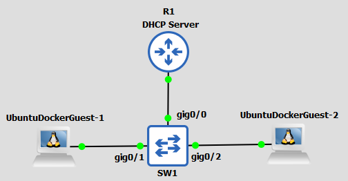

A
B
C
D
Téměř každé zařízení v dnešním světě potřebuje přístup k Internetu. K tomu je zapotřebí mít správně nastavenou IP adresu a adresu výchozí brány, což ale ne každý umí nastavit a ve větších sítích by mohlo být ruční nastavování těchto údajů zbytečnou zátěží. Proto se vyvinul BOOTP a jeho nástupce DHCP protokol.
DHCP je protokol, který zařízení dynamicky přiřadí síťové údaje (IP adresu, subnet mask, výchozí bránu atd.).
DHCP funguje na tom principu, že se host snaží vyhledat veškeré DHCP servery v LAN. Jakmile serverům dojde zpráva od hosta, vytvoří mu nabídku síťové konfigurace. Jednu z nabídek si host vybere a dá vědět, danému DHCP serveru, že si vybral síťovou konfiguraci právě od něj. DHCP server pak již pouze potvrdí, že to tak tedy bude a tím pádem se hostovi přidělí daná síťová konfigurace.
Právě popsaný proces se nazývá DORA a je založený na následujicích DHCP zprávách:
Když se zařízení připojí do sítě, zkontroluje, jestli jsou v síti k dispozici nějaké DHCP servery, které by mu na nějaký čas přiřadily síťové nastavení. K tomu, aby mohl objevit DHCP server, potřebuje vyslat DHCP Discovery zprávu. Problém je, že na to aby mohl poslat DHCP Discovery zprávu, potřebuje IP adresu o kterou si ale právě chce zažádat.
Co bude tedy zařízení dělat?
Zařízení, které ještě nemá IP adresu a potřebuje komunikovat s ostatními zařízeními, používá IP adresu 0.0.0.0.
Protože neví, jestli a kde se DHCP server nachází, tak pošle broadcast zprávu.
DHCP Discovery zpráva ve Wiresharku:
Můžeme si všimnout, že DHCP používá BOOTP UDP porty 68 a 67. Dále jsem na obrázku také vyznačil IP adresu a MAC adresu zařízení s tím, že DHCP serverům sdělí i svůj hostname.
Speciálně jsem ještě na obrázku zeleně označil Magic cookie, který odlišuje DHCP od jeho předchůdce - BOOTP.
DHCP servery si povšimnou DHCP hosta a pošlou mu tzv. DHCP Offer, ve kterém mu pošle nabízené údaje.
Z obrázku můžeme vidět, že IP adresa příjemce je tentokrát unicastová, i když oficiálně host žádnou IP adresu nemá. DHCP server totiž k tomuto účelu použije IP adresu, kterou by hostovi přidělil, pokud si ho zvolí.
Jak ale host pozná, že je ta DHCP Offer určená pro něj, když ta adresa příjemce ještě není jeho?
K tomu, aby host poznal, že DHCP Offer je určena pro něj, se použije hostova MAC adresa, kterou server získal z DHCP Discovery zprávy.
Nicméně je nutno uvést to, že unicast se neposílá pokaždé a závisí to na hostovi. Host to totiž určí již v DHCP Discover zprávě (na obrázku v DHCP Discovery je to označeno oranžově).
Kromě nabízené IP adresy si můžeme všimnout toho, že DHCP Server nabízí hostovi spolu s IP adresou ještě výchozí bránu (označeno jako option 3 - Router), Domain Name Server, masku podsítě, jak dlouho by DHCP server "pronajímal" danou konfiguraci atd.
Obvykle ten DHCP Offer, který dojde nejrychleji k hostovi bude přijat tím, že host pošle DHCP serveru DHCP Request zprávu.
Ta je v mnohém podobná DHCP Discovery zprávě. Opět si například můžete všimnout toho, že zařízení používá 0.0.0.0 jako IP adresu odesílatele a broadcast 255.255.255.255 jako IP adresu příjemce.
Proč ale host používá broadcast IP adresu, když zná IP adresu DHCP serveru, kterého si host vybral?
To je tím, že díky tomu upozorní ostatní DHCP servery, že si již vybral DHCP server. IP adresu 0.0.0.0 pak používá kvůli tomu, že stále ještě oficiálně nevlastní nabízenou IP adresu.
Dále si můžeme všimnout toho, že ten DHCP server, jež byl vybrán, je tam specifikován pod "Option 54 - DHCP Server Identifier".
Teď už zbývá to pouze potvrdit od DHCP serveru, který pošle hostovi DHCP ACK zprávu, kterou to definitivně potvrdí.
Tuto zprávu, stejně jako DHCP Offer, posílá na IP adresu, kterou mu DHCP server nabídl a host ji přijal, ale ještě není oficiálně jeho. Je zde však i možnost, že by byl DHCP ACK poslán broadcastem, avšak to záleží, stejně jako u DHCP Offer, na samotném hostovi, který to specifikuje v DHCP Request zprávě.
Přijetím této zprávy host dostává na určitou dobu síťovou konfiguraci.
DHCP Discover zprávy nemůžou být odeslány mimo LAN, avšak u větších sítí nemusí být úplně ideální mít pro každou LAN vlastní DHCP server. Proto má router či L3 switch možnost udělat ze sebe DHCP relay, kdy se to zařízení chová jako prostředník mezi hostem a DHCP serverem.
Jak DHCP Relay funguje?
Příklad - názorná úkazka DHCP Relay:
R1 je nastavený jako DHCP Server. Má k dispozici 2 POOLy - POOL A, POOL B.
R2 a R3 mají interface g0/0 nakonfigurovaný jako DHCP Relay, jinými slovy když jim na ten interface přijde nějaká DHCP zpráva, tak ji pošlou na daný DHCP server.
Host-1 se tedy rozhodne najít DHCP Server.
Pošle tedy broadcastem DHCP Discover zprávu. Ta dorazí na gig0/0 interface R2, který je nastavený jako DHCP Relay. Ten přetransformuje zprávu na unicast a pošle ji na daný DHCP server.
DHCP server mu pošle nabídku. Host ji přijme a DHCP server potvrdí přijetí.
Jestliže bude nastaveno vícero POOLů, tak DHCP server přidělí jeden POOL každé DHCP Relay, případně každé subnetě.
Konfiguraci DHCP si ukážeme na následujícím příkladu:

Udělej na R2 DHCP server s následujicími parametry:
Z R4 udělej na interfacu g0/0 DHCP Relay server odkazující na R2 loopback adresu 1.1.1.1.
Nejdřív tedy vytvoříme na R2 DHCP POOL jménem NET1:
R2(config)#ip dhcp pool NET1
Vytvořením POOLu se automaticky přepneme do dhcp konfigurace, kde nastavíme potřebné údaje:
R2(dhcp-config)#network 192.168.2.0 255.255.255.0 R2(dhcp-config)#default-router 192.168.0.1 R2(dhcp-config)#dns-server 8.8.8.8 R2(dhcp-config)#lease 12
Nakonec ještě na R2 nastavíme to, že adresy 192.168.2.1 a 192.168.2.254 nebudou součástí našeho DHCP POOLu.
R2(config)#ip dhcp excluded-address 192.168.2.1 R2(config)#ip dhcp excluded-address 192.168.2.254
Nyní se přesuneme na R4, kde z g0/0 uděláme DHCP RELAY odkazující na R2 loopback adresu 1.1.1.1
R4(config-if)#ip helper-address 1.1.1.1
Nyní by všichni hosti měli dostat potřebnou síťovou konfiguraci. To koneckonců můžeme i zkontrolovat pomocí příkazu:
R2#show ip dhcp binding
Ten nám ukazuje získanou IP adresu na zařízení s danou MAC adresou a dokonce tam i vidíme, kdy vyprší "pronájem" údajů.
DHCP Poisoning je jeden z Man-in-the-middle útoků, který z útočníka udělá prostředníka mezi dvěmi zařízeními (většinou mezi hostem a výchozí bránou).
Princip DHCP Poisoningu si vysvětlíme na následujicím příkladu:
Do této sítě se připojí rogue DHCP server.
Jakmile se Hosti začnou ptát po DHCP serverech, dostanou odpověď jak od R1, tak od útočníka (Rogue-DHCP).
Host poté přijme nabídku od toho DHCP serveru, od kterého získal, co nejrychleji, odpověď. V tomto případě, byla nejrychlejší odpověď právě od útočníka, a proto Hosti získávají síťovou konfiguraci právě od něj.
Co tím ale útočník získá?
Útočník může sám sebe prostřednictvím DHCP konfigurace nakonfigurovat jako výchozí bránu, tudíž veškerá data, která budou hosté posílat mimo síť, budou posílána přes útočníka. Útočník si pak tato data může zobrazit, případně nějakým způsobem upravit.
Dál útočník může zařízení odkazovat na rogue DNS server, který může hosty odkazovat na škodlivé weby.
Tento útok probíhá často v kombinaci s DHCP Starvation útokem, který si nejdříve nechát přidělit veškeré IP adresy ze stávajicího DHCP serveru a až pak do sítě připojí svůj rogue DHCP server, jež bude jediný DHCP server v síti.
Jak se ale proti tomuto útoku bránit?
Zcela nejlepší prevencí by bylo nastavit na switchi DHCP Snooping.
DHCP Starvation má za cíl znemožnit hostům získat síťové údaje z DHCP serveru tím, že útočník spotřebuje všechny adresy v DHCP POOLu.
Princip si opět vysvětlíme na příkladu:
Máme následující topologii, kde R1 funguje jako DHCP server, který má pool A s dostupnými IP adresami 192.168.0.100-120.
Do sítě se nyní připojí útočník - YER, který pomocí programu Yersinia, spotřebuje veškeré dostupné IP adresy z POOLu A.
Pozn. Program Yersinia vytvoří velký počet DHCP Request broadcastů s vymyšlenými MAC adresami.
Tím pádem již žádný další host nezíská síťovou konfiguraci z R1.
Tomuto útoku můžeme předcházet nakonfigurováním port security či DHCP Snoopingu.
DHCP Snooping je prevencí proti DHCP útokům. Ten funguje na tom principu, že na switchi (Switch je povětšinou mezi DHCP serverem a hostem, tudíž má možnost zachytit potenciální útok) filtruje DHCP zprávy, které přijme na nedůvěryhodných portech. Nedůvěryhodné porty by měly být ty, které nevedou od DHCP serveru, přičemž v základu jsou tak nastaveny všechny.
Jakmile na nedůvěryhodný port dorazí zpráva, tak se zkoumá, jestli to je zpráva, kterou typicky posílá server, nebo zpráva od hosta. Je-li to zpráva od DHCP serveru, tak je zpráva automaticky zahozena. Bude-li to zpráva hosta, tak tam se pak ještě zkoumá typ zprávy a pak samotné parametry těch zpráv.
Ještě předtím než se vrhneme na konfiguraci je nutné upozornit na to, že DHCP Snooping má obvykle automaticky aktivovanou tzv. "option 82". Option 82 má smysl pouze s použitím L3 switche, kdy se zařízení chová jako switch i jako DHCP Relay. V případě, že budete mít aktivovanou "Option 82" na L2 switchi či L3 switchi, který není DHCP Relay, vám nebude DHCP fungovat správně.
Konfiguraci si opět ukážeme na příkladu:
Prvně na SW1 povolíme DHCP Snooping a určíme v jaké vlaně:
SW1(config)#ip dhcp snooping SW1(config)#ip dhcp snooping vlan 1
Následně určíme, který port bude trusted (gig0/0):
SW1(config)#int gig0/0 SW1(config-if)#ip dhcp snooping trusted
A nakonec vzhledem k tomu, že máme pouhopouhý L2 Switch zrušíme nastavení "option 82":
SW1(config)#no ip dhcp information option
Budeme-li si chtít naší konfiguraci ověřit, tak použijeme příkaz:
SW1#show ip dhcp snooping
| Příkazy | Popis | Mód |
|---|---|---|
| ip dhcp pool {nazev} | Definice a přepnutí do DHCP POOL módu | Global Config |
| network {net-ID} {maska podsítě} | Specifikuje velikost POOLu | DHCP POOL mód |
| default-router {ip-adresa} | Specifikuje IP adresu výchozí brány | DHCP POOL mód |
| dns-server {ip-adresa} | Určí ip adresu dns serveru | DHCP POOL mód |
| lease {hod | infinity} | Nastaví čas pronájmu síťové konfigurace | DHCP POOL mód |
| ip dhcp excluded-address {první IP adresa} {poslední IP adresa} | Určí, které IP adresy mají být vyjmuty z nabízeného rozsahu | Global Config |
| ip helper-address {ip-adresa} | Nastaví DHCP Relay | Interface |
| show ip dhcp binding | Zobrazí vazbu půjčené IP adresy na MAC adresu zařízení s časem "pronájmu" | Priviledged EXEC |
| ip dhcp snooping | Povolí na switchi DHCP Snooping | Global Config |
| ip dhcp snooping vlan {vlan-ID} | Určí na které vlaně aktivujeme DHCP Snooping | Global Config |
| ip dhcp snooping trusted | Nastaví daný interface jako důvěryhodný | Interface |
| no ip dhcp information option | Zakáže tzv. "Option 82" | Global Config |
| show ip dhcp snooping | Zobrazí informace o DHCP Snoopingu | Priviledged EXEC |
DHCP je protokol, který nám má dynamicky přidělovat síťovou konfiguraci na určitý čas, to je důležité zejména pro to, že ne každý uživatel počítače, mobilu či chytré ledničky ví, co to je výchozí brána a neuměl by to nastavit a také by manuální nastavování těchto údajů nebylo příliš efektivní ve větších sítích.
Samotný protokol funguje tak, že nejdříve host vyhledá DHCP servery v síti, které mu nabídnou svoji síťovou konfiguraci. Host si poté vybere tu nabídku, která mu přijde nejdřív a DHCP Server to potom potvrdí.
DHCP je velice náchylný vůči útokům, a tak je nutno jim předcházet - jedna z možností, jak lze těmto útokům předcházet je nasazení DHCP Snoopingu na switchi, který bude filtrovat DHCP zprávy na nedůvěryhodných portech.
A
B
C
D